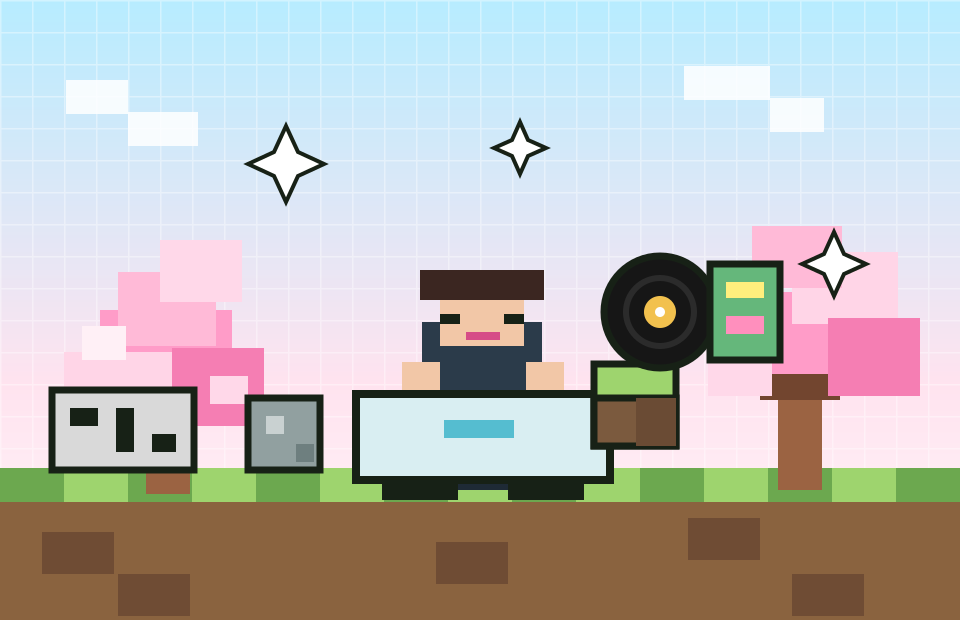
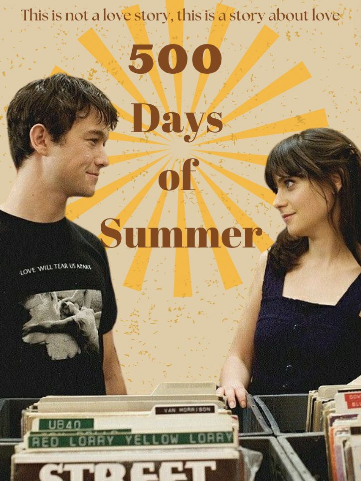
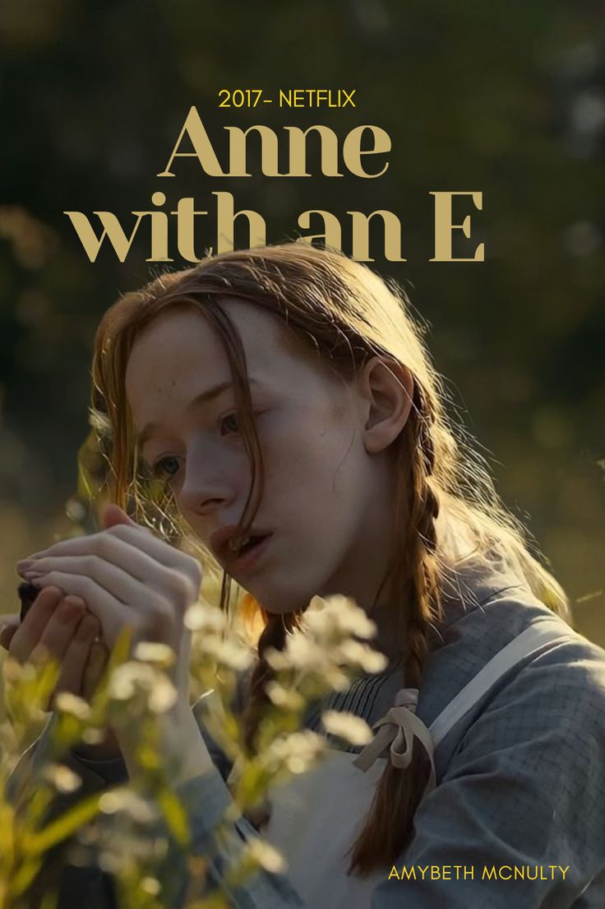
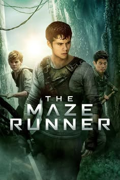
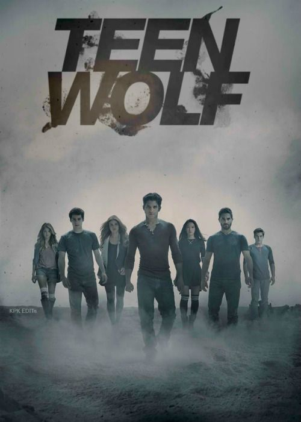
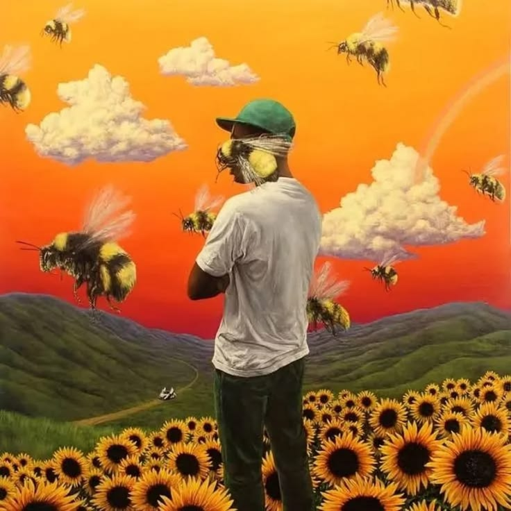
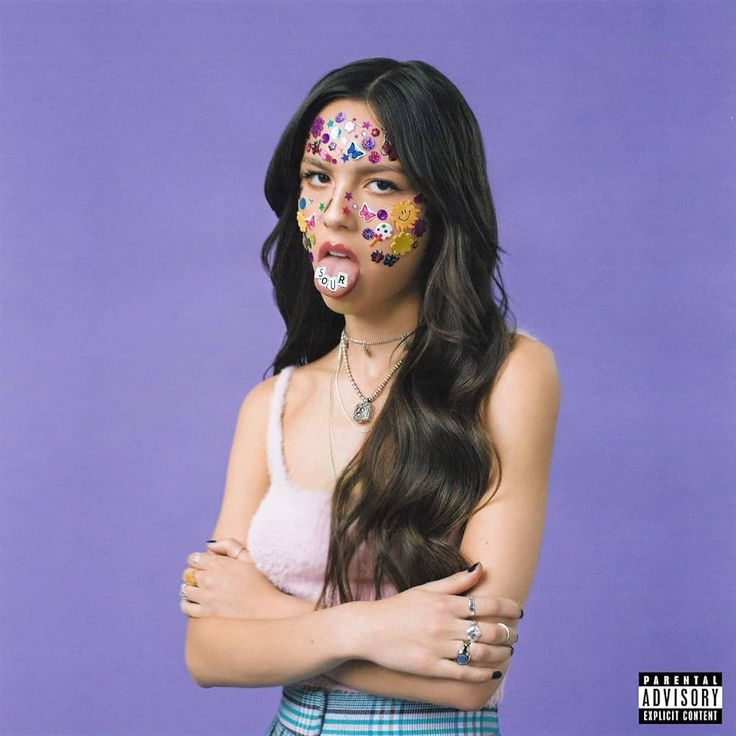
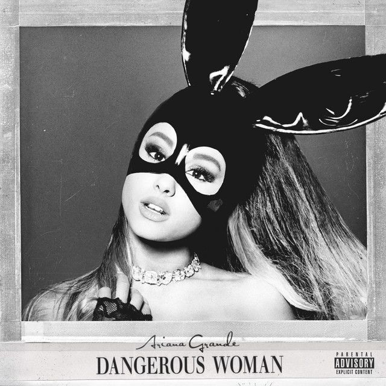

Кто я
Меня зовут Инабат. Я начинающий Python Junior-разработчик, мне нравится создавать необычные проекты и пробовать себя в IT.
CAP Education · конкурс «Обо мне»
Python Junior-разработчик, которая превращает первые знания в сайты, игры и маленькие цифровые миры.

8 блоков портфолио
Это история о том, как я пришла в программирование, чему учусь сейчас и какой проект хочу показать на конкурсе.
Меня зовут Инабат. Я начинающий Python Junior-разработчик, мне нравится создавать необычные проекты и пробовать себя в IT.
Я хочу стать чем-то большим, чем просто ученица курса: расти как разработчик, делать игры, сайты и проекты, которыми можно гордиться.
Я узнала о CAP Edu на презентации в моём родном городе Атырау. Эта встреча стала точкой старта моего пути в программировании.
Мой ментор — Диана. Она преподаёт веб-разработку и помогает мне понимать, как создавать красивые и рабочие сайты.
Сначала я почти ничего не знала о Python, а сейчас создаю свой первый сайт и параллельно работаю над игрой на платформе Roblox.
Я люблю танцы и чтение. Особенно меня вдохновляют Harry Potter и Maze Runner: в них много магии, силы и движения вперёд.
Одна из моих лучших работ — Roblox-игра, которую я создала вместе с сестрой. Это был мой первый большой творческий проект.
В финале здесь будет ссылка на репозиторий, где хранится весь проект: код, стили, скрипты и ассеты сайта.
От нуля к первому миру
Первые уроки, первые ошибки и первое чувство: «я правда могу».
Код уже не выглядит случайными символами, а превращается в идеи.
Я делаю портфолио и параллельно создаю игру, потому что хочу учиться через настоящие проекты.
Факты обо мне
Здесь я собрала то, что меня вдохновляет: истории, атмосфера, музыка и настроение, которое хочется переносить в проекты.
Cinema shelf
Мне нравятся истории с сильной атмосферой, эмоциями, дружбой и приключениями.





Playlist
Эти обложки создают настроение для танцев, чтения и творческих вечеров с кодом.





Вот послушайте один из них
Нажми Play, чтобы включить трек. Stop полностью остановит музыку.
Лучшие работы
Мой первый большой творческий проект. В нём я попробовала думать как создатель: не только «как сделать», но и «как игрок будет это чувствовать».
Мой сайт для конкурса CAP Education: история обо мне, мой путь, музыка, хобби, анимации и интерактивный Cherry Grove-мир.
Добавить больше проектов, развивать Python-навыки и создать портфолио, которое показывает мой настоящий рост.
GitHub
Репозиторий можно добавить перед сдачей конкурса, когда сайт будет загружен на GitHub.